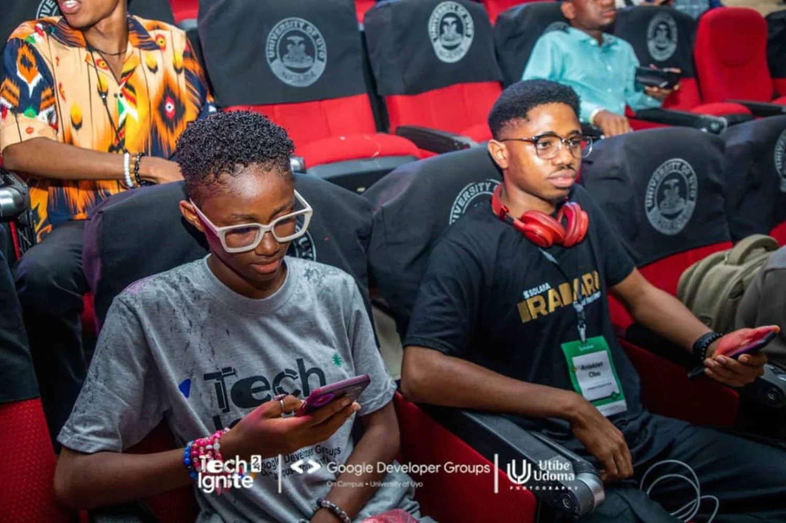

LET’S BUILD WHAT’S NEXT
LET’S START
A CONVERSATION.
For event sponsorship, exhibition, technical participation, institutional collaboration or general enquiries, reach the organising team.
Make the connection.
Tell us what your organisation is exploring. We will use your email application to prepare a message to the TECHFORGE partnerships team.

Tell us what you have in mind.
USEFUL DETAILS
Before you reach out.
Where is TECHFORGE 2027 taking place?
The event is planned for University of Uyo, Uyo, Akwa Ibom State, on 28–29 January 2027. Exact hall and arrival information will be announced separately.
Can organisations sponsor a particular experience?
We can discuss tailored participation in technical sessions, demonstrations or the innovation expo. No session is currently represented as belonging to a particular sponsor.
Can I register as an attendee?
Attendee registration details will be published when registration opens. Please contact the organising team for updates; no live checkout or registration has been announced.
Is AKWAFORGE 1000 included in my event sponsorship?
No. AKWAFORGE 1000 is a proposed separate accelerator, and any training partnership would be agreed independently.